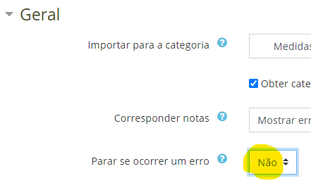

moodle questions¶
O modo matemática a usar no ficheiro Rmd é com \(\bar x\)
Resultado numérico arredondado a 4 casas decimais:
{2:NUMERICAL:=`r round(var,4)`:0.001}
Utilização de shortanswer:
{2:SHORTANSWER_S:=alguma palavra ou frase correta=outra correta~esta é errada~esta é outra errada}
não usar LaTeX na shortanswer.
o moodle permite facilmente que o professor corrija e adapte a classificação lendo cada resposta de cada aluno.
Colocar código r deve ser com três plicas e a letra r:
```r > x = matrix( c(A,B,C,D),nrow=2) ```
moodle import process¶
To create an exam, using this package, one must stricly follow an easy structure :doc:moodle.
In moodle, create category “imported” (“importados”)
Move moodle Category “imported” to the top (for ease of use).
(“É útil que a categoria “importados” surja no topo:”)
a. Colocar como subcategoria de outra que seja vísivel no topo b. Voltar a promover
import to moodle
No processo de importar abrir “Geral” => “Para em erros = Não”

Import
Procurar categorias com (0) (onde houve erros)
To delete imported exam and repeat:
Open main
Categorywhere question exam bank is;Select everything below
Delete
Eventaully,
Is necessary to delete subcategories one by one.